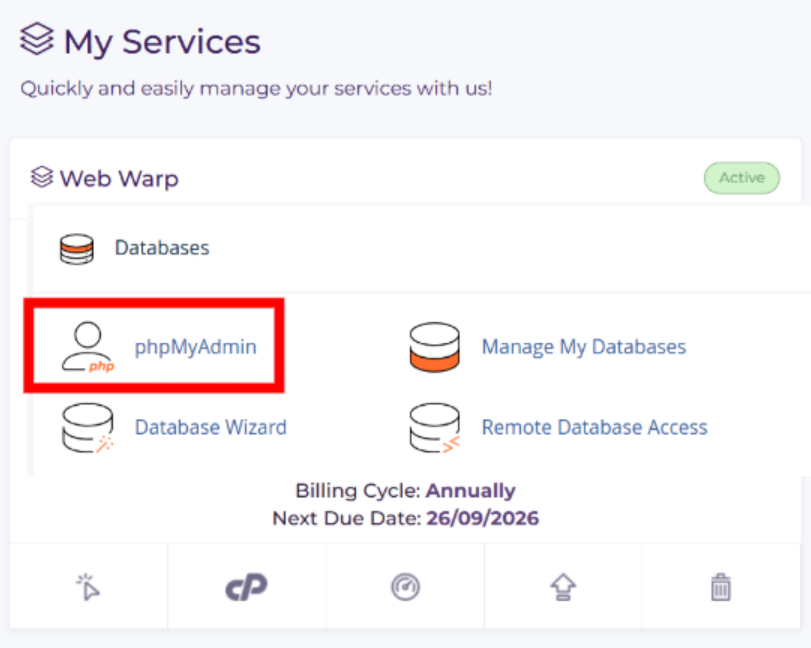
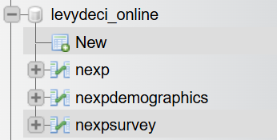

Complete Database Tutorial: Setup, Development, and Data Management
A comprehensive guide covering server-side database creation, client-side implementation, and data management through phpMyAdmin.
Section 1: Server-side Database Setup
Learn how to create database tables and understand different data types for proper database structure.
1) Access phpMyAdmin
Log into your hosting control panel (HostArmada, cPanel, etc.) and open phpMyAdmin to manage your databases.
- Sign into your hosting account
- Click the cPanel/Control Panel icon
- Find and click "phpMyAdmin"
2) Click Control Panel
Once logged into your hosting account, locate and click the cPanel/Control Panel icon to access your hosting management tools.
3) Access phpMyAdmin
In the cPanel dashboard, find the phpMyAdmin option under the database section and click it to open the database management interface.
4) Table Structure Best Practices
Follow these guidelines when creating tables:
- Primary Key: Always include an AUTO_INCREMENT INT primary key (like 'id')
- Timestamps: Add creation/update timestamps for tracking
- Null Values: Decide which fields can be empty (NULL) vs required (NOT NULL)
- Constraints: Use appropriate constraints for data integrity
5) Create a New Table
In phpMyAdmin, select your database and create a new table with appropriate columns and data types.

6) Understanding Data Types
Different data types serve different purposes in your database:
- INT: Whole numbers (1, 2, 100, -50)
- CHAR(n): Fixed-length text (exactly n characters)
- VARCHAR(n): Variable-length text (up to n characters)
- DECIMAL(m,d): Precise decimal numbers (m digits total, d after decimal)
- TIMESTAMP: Date and time stamps
- TEXT: Large amounts of text
Video: Create a Table and Insert Data in phpMyAdmin
Section 2: Creating Your Own Experiment
Learn how to build a complete survey experiment that collects data from participants and stores it in your database using HTML, JavaScript, and PHP.
HTML Survey Form
This is the complete HTML file for a demographic survey that collects participant data. The form uses JavaScript to create a multi-step survey experience.
<!DOCTYPE html>
<html lang="en">
<head>
<meta charset="UTF-8">
<title>Demographic Survey</title>
<meta name="viewport" content="width=device-width, initial-scale=1.0">
<style>
body {
background-color: #f0f0f0;
font-family: Arial, sans-serif;
max-width: 800px;
margin: 0 auto;
padding: 20px;
}
.survey-container {
background: white;
padding: 30px;
border-radius: 10px;
box-shadow: 0 2px 10px rgba(0,0,0,0.1);
}
.question {
margin-bottom: 30px;
display: none;
}
.question.active { display: block; }
.question h3 { color: #333; margin-bottom: 15px; }
.options { margin: 15px 0; }
.option {
margin: 8px 0;
display: flex;
align-items: center;
}
.option input { margin-right: 10px; }
.option label { cursor: pointer; flex: 1; }
select, input[type="text"], textarea {
width: 100%;
padding: 10px;
border: 1px solid #ddd;
border-radius: 5px;
font-size: 16px;
box-sizing: border-box;
}
.buttons {
margin-top: 30px;
display: flex;
justify-content: space-between;
}
button {
padding: 12px 25px;
border: none;
border-radius: 5px;
font-size: 16px;
cursor: pointer;
}
.btn-primary {
background-color: #007bff;
color: white;
}
.btn-secondary {
background-color: #6c757d;
color: white;
}
.progress-bar {
width: 100%;
height: 6px;
background-color: #e9ecef;
border-radius: 3px;
margin-bottom: 20px;
}
.progress-fill {
height: 100%;
background-color: #007bff;
border-radius: 3px;
transition: width 0.3s;
}
</style>
</head>
<body>
<div class="survey-container">
<div class="progress-bar">
<div class="progress-fill" id="progressFill"></div>
</div>
<div id="survey-form">
<!-- <span class="red-comment">QUESTION 1: ADD YOUR QUESTIONS HERE</span> -->
<div class="question active" id="q1">
<h3>What is your sex?</h3>
<div class="options">
<div class="option">
<input type="radio" name="sex" value="Male" id="sex_male">
<label for="sex_male">Male</label>
</div>
<div class="option">
<input type="radio" name="sex" value="Female" id="sex_female">
<label for="sex_female">Female</label>
</div>
</div>
</div>
<!-- <span class="red-comment">QUESTION 2: ADD MORE QUESTIONS BY COPYING THIS STRUCTURE</span> -->
<div class="question" id="q2">
<h3>How old are you?</h3>
<input type="number" id="age" name="age" min="18" max="100" placeholder="Enter your age" />
</div>
<!-- <span class="red-comment">NAVIGATION BUTTONS</span> -->
<div class="buttons">
<button type="button" class="btn-secondary" id="prevBtn" onclick="previousQuestion()" disabled>Previous</button>
<button type="button" class="btn-primary" id="nextBtn" onclick="nextQuestion()">Next</button>
</div>
</div>
<div id="completion" style="display: none; text-align: center;">
<h2>Survey Complete!</h2>
<p>Thank you for completing the survey. Your responses have been recorded.</p>
</div>
</div>
<script>
<span class="red-comment">// STEP 1: GET PARTICIPANT IDS FROM URL (IMPORTANT FOR DATA TRACKING)</span>
const urlstring = window.location.search;
const urlparams = new URLSearchParams(urlstring);
let userid = urlparams.get('userid');
let PROLIFICPID = urlparams.get('PROLIFIC_PID');
let STUDYID = urlparams.get('STUDY_ID');
let SESSIONID = urlparams.get('SESSION_ID');
<span class="red-comment">// STEP 2: CONFIGURE YOUR SURVEY (CHANGE THESE NUMBERS)</span>
let currentQuestion = 1;
const totalQuestions = 2; <span class="red-comment">// CHANGE THIS: How many questions do you have?</span>
let surveyData = {};
// STEP 3: QUESTION NAVIGATION FUNCTIONS
function showQuestion(num) {
// Hide all questions
document.querySelectorAll('.question').forEach(q => q.classList.remove('active'));
// Show current question
document.getElementById('q' + num).classList.add('active');
// Update navigation buttons
document.getElementById('prevBtn').disabled = (num === 1);
document.getElementById('nextBtn').textContent = (num === totalQuestions) ? 'Complete Survey' : 'Next';
}
function nextQuestion() {
if (currentQuestion === totalQuestions) {
completeSurvey();
return;
}
currentQuestion++;
showQuestion(currentQuestion);
}
function previousQuestion() {
if (currentQuestion > 1) {
currentQuestion--;
showQuestion(currentQuestion);
}
}
// STEP 4: DATA COLLECTION AND SUBMISSION (MODIFY THIS SECTION)
function completeSurvey() {
// COLLECT YOUR DATA: Add each question's data here
surveyData.sex = document.querySelector('input[name="sex"]:checked').value;
surveyData.age = document.getElementById('age').value;
surveyData.timestamp = new Date().toISOString();
// Hide survey form and show completion message
document.getElementById('survey-form').style.display = 'none';
document.getElementById('completion').style.display = 'block';
// SEND DATA TO PHP: This sends all data to your survey.php file
const params = new URLSearchParams({
PROLIFICPID: PROLIFICPID,
STUDYID: STUDYID,
SESSIONID: SESSIONID,
userid: userid,
sex: surveyData.sex,
age: surveyData.age
// ADD MORE FIELDS HERE: Add your custom questions
});
fetch('survey.php?' + params.toString(), { method: 'GET' });
// REDIRECT AFTER COMPLETION: Change this URL to your completion page
setTimeout(() => {
window.location.href = "https://app.prolific.com/submissions/complete?cc=CFEM8M48";
}, 500);
}
// Initialize the survey
document.addEventListener('DOMContentLoaded', function() {
showQuestion(1);
});
</script>
</body>
</html>
PHP Data Processing Script
<?php
// STEP 1: DATABASE CONNECTION SETTINGS (CHANGE THESE TO YOUR DATABASE)
$servername = "localhost"; // Your database server
$username = "your_db_username"; // Your database username
$password = "your_db_password"; // Your database password
$dbname = "your_database_name"; // Your database name
// STEP 2: CONNECT TO DATABASE
$conn = mysqli_connect($servername, $username, $password, $dbname);
// Check if connection worked
if (!$conn) {
die("Connection failed: " . mysqli_connect_error());
}
// STEP 3: GET DATA FROM HTML FORM (AUTOMATICALLY RECEIVED FROM JAVASCRIPT)
$PROLIFICPID = $_GET['PROLIFICPID']; // Participant ID from Prolific
$STUDYID = $_GET['STUDYID']; // Study identifier
$SESSIONID = $_GET['SESSIONID']; // Session identifier
$userid = $_GET['userid']; // Your custom user ID
$sex = $_GET['sex']; // Survey response: sex
$age = $_GET['age']; // Survey response: age
// ADD MORE VARIABLES HERE: Add variables for your custom questions
// STEP 4: INSERT DATA INTO YOUR DATABASE TABLE
$sql = "INSERT INTO demographics
(PROLIFICPID, STUDYID, SESSIONID, userid, sex, age)
VALUES ('$PROLIFICPID', '$STUDYID', '$SESSIONID', '$userid', '$sex', $age)";
// CHANGE TABLE NAME: Replace 'demographics' with your table name
// ADD MORE COLUMNS: Add columns for your custom questions
// STEP 5: EXECUTE THE DATABASE INSERTION
if (mysqli_query($conn, $sql)) {
echo "New record created successfully";
} else {
echo "Error: " . $sql . "<br>" . mysqli_error($conn);
}
// STEP 6: CLOSE DATABASE CONNECTION
mysqli_close($conn);
?>
How It All Works Together
Here's the complete flow of how your experiment works:
- Participant visits your HTML page - They see the survey form
- JavaScript collects responses - As they answer questions, data is stored in memory
- Form validation - JavaScript checks that required fields are filled
- Data submission - When complete, JavaScript sends data to your PHP script
- PHP receives data - The $_GET array captures all the survey responses
- Database insertion - PHP connects to your database and inserts the new record
- Confirmation - PHP confirms the data was saved successfully
- Redirect - JavaScript redirects participant to completion page
- Change the questions in the HTML to match your research
- Update the database table structure to match your data needs
- Modify the PHP script to insert into your specific table
- Adjust the redirect URL to your completion page
Section 3: Adding Data to Tables
Learn different methods to add data to your database tables manually and programmatically.
1) Navigate to Your Table
In phpMyAdmin, click your database name in the left panel, then click the table you want to add data to.
2) Using phpMyAdmin Insert Tab
The easiest way to manually add data is through phpMyAdmin's Insert interface.
- Select your table from the left panel
- Click the Insert tab at the top
- Fill in the form fields that correspond to your table columns
- Click Go to insert the data

3) Bulk Data Import
For larger datasets, use phpMyAdmin's Import feature to upload CSV or SQL files.
- Prepare your data in CSV format
- Click the Import tab in phpMyAdmin
- Choose your file and select the appropriate format
- Map columns to your table structure
- Execute the import
4) Troubleshooting Common Issues
- Access denied: Check username/password and database user privileges
- Column mismatch: Verify table structure in phpMyAdmin → Structure tab
- Data type errors: Ensure your data matches the column data types (INT, CHAR, DECIMAL, etc.)
- Connection issues: For localhost use
localhostor127.0.0.1. For remote hosts, use the host provided by your hosting provider - Form not submitting: Check form action URL and method (POST vs GET)
- PHP errors: Enable error reporting during development:
error_reporting(E_ALL); ini_set('display_errors', 1);